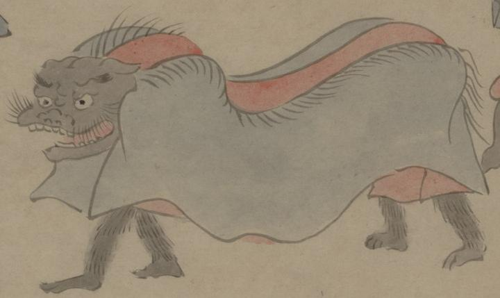

獅子舞をする化物。黒い獅子頭と青と赤の覆い布を2体の化物がかぶって、歩いている。化物の脚は黒い毛が生えており、獣の変化とおもわれる。
出典：親書誌：U426_nichibunken_0150：付喪神絵詞；ツクモガミエコトバ／日付：2010／資源識別子：U426_nichibunken_0150_0063_0000
Copyright (c)2010- International Research Center for Japanese Studies, Kyoto, Japan. All rights reserved.